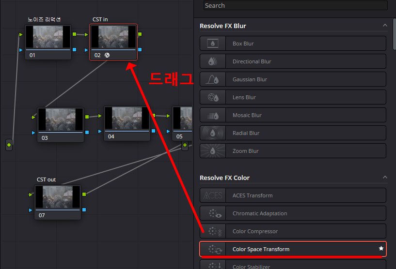
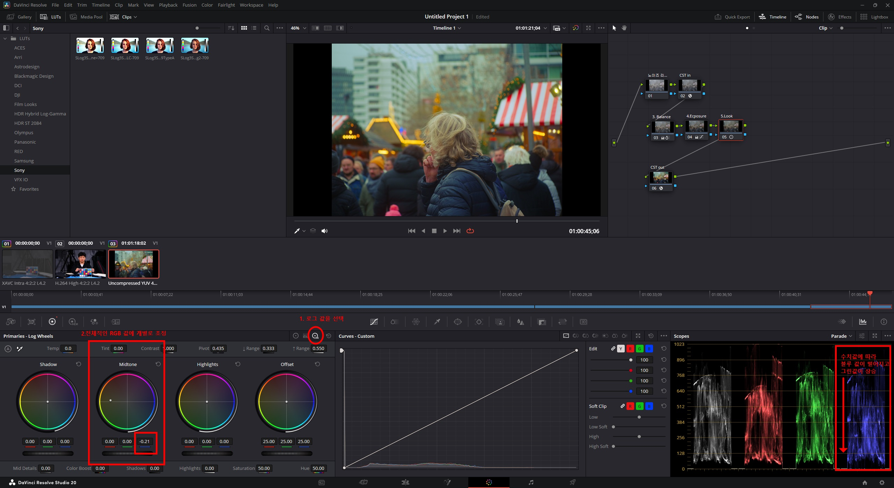

STEP 1. 프로젝트 컬러 매니지먼트 설정
정확하고 일관된 색상 작업을 위한 기초 공사입니다. 작업의 기준이 되는 가장 중요한 첫 단계입니다.
- Color Science:
DaVinci YRGB - Timeline Color Space:
DaVinci WG/Intermediate(넓은 색 영역) - Output Color Space:
Rec.709 Gamma 2.4(웹/방송 표준)
STEP 2. 체계적인 노드 구성
작업의 효율성과 가독성을 높이기 위해 노드를 역할별로 미리 구성하여 작업의 흐름을 만듭니다.
STEP 3-5. 컬러 스페이스 변환 (CST) 적용
촬영 원본을 작업용으로, 작업물을 최종 출력용으로 정확하게 변환하는 핵심 과정입니다.

1. CST 효과 적용
2. CST In 설정 (원본 → 작업용)
3. CST Out 설정 (작업용 → 최종)
STEP 6. 화이트 밸런스 조정
`Primary Wheels`의 `Offset`을 조정하여 영상의 전체적인 색온도를 맞춰 중립적인 톤을 만듭니다. 스코프의 RGB 파형을 참고하세요.
STEP 7. 노출 조정 (Primary Correction)
영상의 밝기를 영역별로 세밀하게 조절하여 적절한 대비(Contrast)를 만듭니다.
STEP 8. 로그 휠을 이용한 세부 조정
`Log Wheels`를 사용하면 `Shadow`, `Midtone`, `Highlights` 영역을 더 정교하게 제어하여 미묘하고 풍부한 톤을 만들 수 있습니다.

STEP 9-11. 개별 색상 조정 (Secondary)
영상 전체가 아닌 특정 색상만 선택하여 변경하는 과정입니다.
1. Color Slice 툴로 색상 선택
2. 선택 색상 조정 (Qualifier 확인)
STEP 12-14. 창의적 효과 추가 (Glow)
기본 보정이 끝난 후, `Glow` 효과 등을 사용하여 영상의 분위기를 극대화합니다.